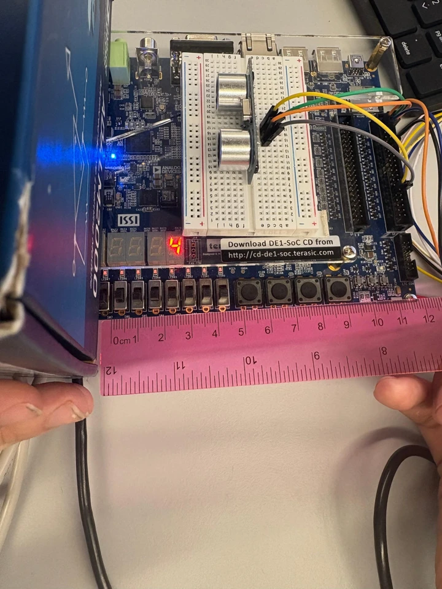
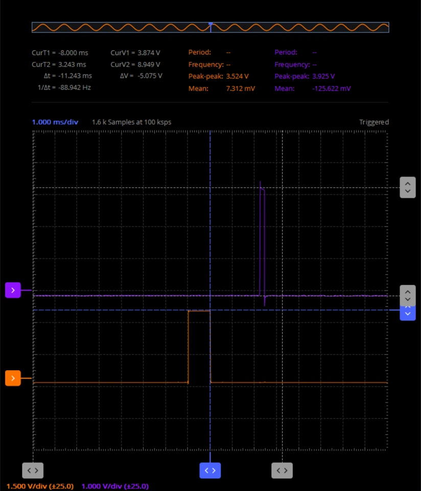

Digital sensing
Ultrasonic distance sensor
A DE1-SoC FPGA times a returning echo and displays distance in centimeters.

Timing an echo
We triggered an HC-SR04 ultrasonic sensor and counted 50 MHz clock cycles while its echo output stayed high. Each cycle represented 20 ns. Multiplying the elapsed time by the speed of sound and dividing by two gave the one-way distance.
Reading the result
We reused a seven-segment display circuit to show the distance in centimeters. With an ADALM2000 oscilloscope, we inspected the trigger and echo signals to relate the timing on the bench to the counter logic in Quartus.
